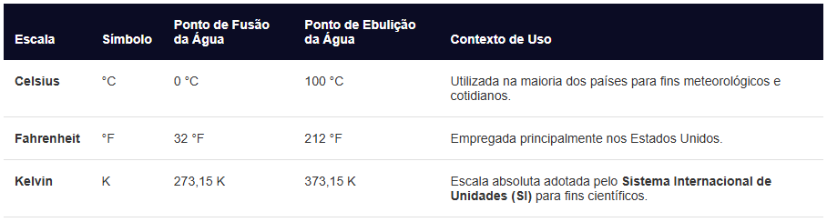

Temperatura
A temperatura é uma grandeza física escalar que mede o grau de agitação térmica, ou seja, a energia cinética média das moléculas ou átomos que compõem um corpo. Quanto maior for a velocidade e a vibração dessas partículas, maior será a temperatura do sistema.
A temperatura exerce importante papel na vida dos seres vivos. Variações repentinas de temperatura podem resultar na morte de populações inteiras. Animais que não têm algum mecanismo interno que regule a temperatura do seu corpo, como peixes, anfíbios, répteis e invertebrados, são muito sensíveis a mudanças bruscas na temperatura.
Diferença entre Calor e Temperatura
Na física, estes dois conceitos são frequentemente confundidos no cotidiano, mas representam fenômenos distintos:
Temperatura: É a medida do estado térmico local (a agitação interna das moléculas).
Calor: É a energia térmica em trânsito que se transfere espontaneamente de um corpo de maior temperatura para outro de menor temperatura até que ambos atinjam o equilíbrio térmico.
Escalas Termométricas:
Para quantificar a temperatura, a física utiliza três escalas principais baseadas em pontos de referência específicos (como os pontos de fusão e ebulição da água ao nível do mar):
